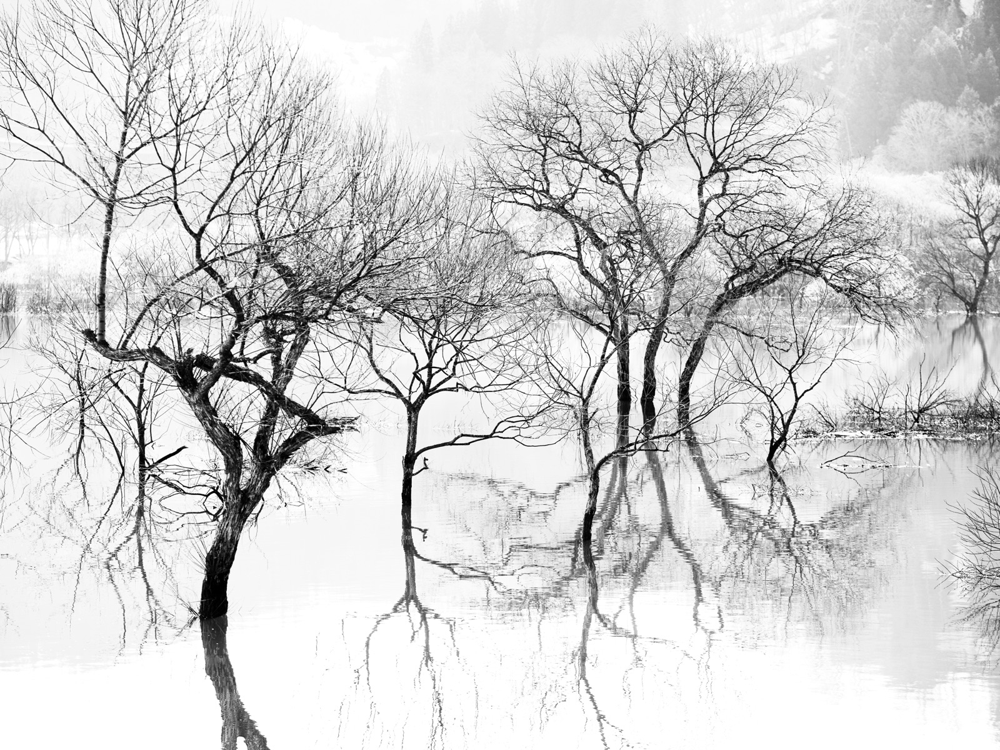
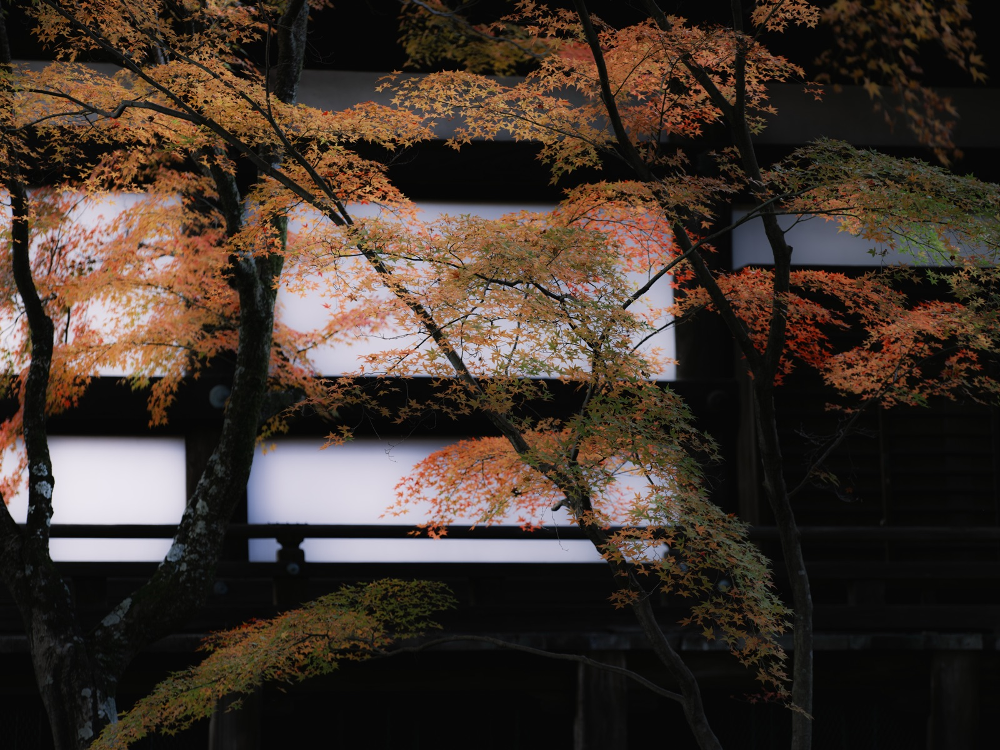

目前 · 現行
 山水 · 冬
影上之影Shadow upon Shadow
山水 · 冬
影上之影Shadow upon Shadow
山水 · 冬
影上之影Shadow upon Shadow
冬湖枯木、黑白。沉靜內省，和「時代輪廓」的文案最貼。你想換的就是這張。
候選 A

山水 · 冬 水鏡Water Mirror高調白、枯木倒映。更明亮通透、更詩意——但和現行同是冬湖枯木，換了差異最小。
候選 B ★推薦

紅葉 · 秋 寺の秋Temple Autumn白障子的窗格＋紅葉。「書院／案頭」的文化感最強，最扣住學術＝書院的意象。暖色，和冷調水波形成對比。
候選 C ★推薦
雪明 · 冬
静寂Stillness
冷藍、雪中枯枝映水。詩意沉靜，藍調和整站水波冷色最協調，又有「水」的呼應。和現行不同氣質。
候選 D
紅葉 · 冬
冬籠Winter Hush
暗調、幾片楓葉浮於黑。極簡內省、留白多，和深色版面最融。可能偏空、偏暗。